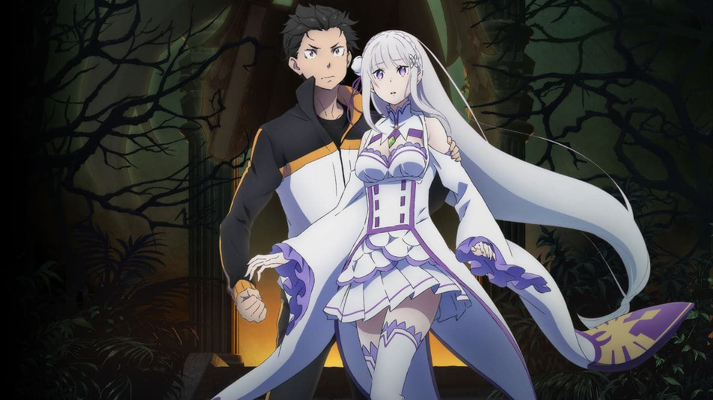
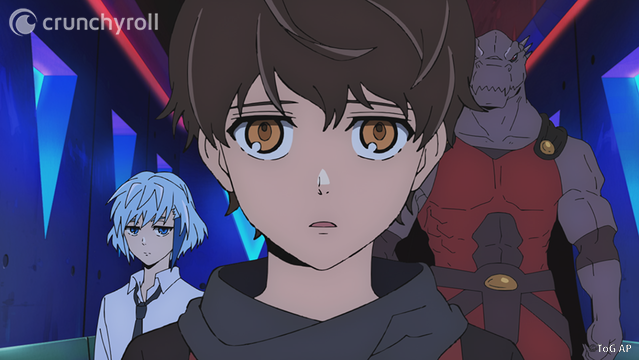

Here's a List of All the Anime Impacted by COVID-19 (Updated)
UPDATED as of May 15 With the far-reaching effects of the COVID-19 (coronavirus) pandemic, as well as Japan’s recently-expanded State of Emergency declaration, the past few weeks have seen a number of announcements for anime postponements. This goes beyond shifting TV schedules; some of the biggest projects and events have been impacted, as well. Because of all the fast-paced news and updates, we wanted to provide a resource for our users and readers to keep track of all the delays. Below you will find a list of shows, movies and events impacted by the effects of coronavirus this season. We want this to act as a living document that you can reference back to whenever more news comes, so please be aware that the information here can be added, changed, and updated at any moment. We hope for the wellbeing of the people working behind all of these shows, projects, events, as well as all of Crunchyroll’s users and readers.
- Tower of god
- A certain scientific railgun
- Magi The Kingdom Of Magic
- A certain magical index
- Kuroko basketbal
Tower of God's Director Reveals What it Was Like Bringing the WEBTOON Series to Life
A wide variety of people come together to bring an anime series to life, and we're here to shine a spotlight on the talented creators behind one of this season's biggest hits, Tower of God. Check out our previous interview with the composer of the soundtrack here. Heading the production of every anime is a director, someone who can organize and bring together all of the different individual contributions into one complete work. Takashi Sano has worn many different hats on many different anime productions, from storyboards on The Ancient Magus' Bride to key animation on series like MEGALOBOX and Neon Genesis Evangelion. And now he is heading the production staff as director of Tower of God. We had the opportunity to talk with Sano about his experience working on the anime adaptation of the smash hit WEBTOON series!